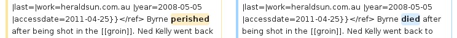
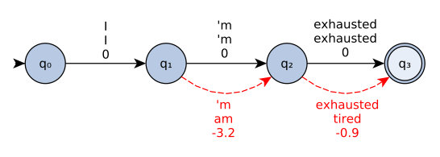

Overview
- Definition: what is readability?
- Research statement
- Related works
- Approach
- Future works
- Conclusion
Related works
- Readability formulas
- Machine learning
- Simple Wikipedia
Early readability research
20ᵗʰ century research was centered around formulas to
estimate if a text is readable ot not.
An efficient set of features
Most formulas use a combination of:
- average number of words per sentence
- average number of syllables per word
- presence of the word in a list of easy words
An example
Dale–Chall readability formula (Dale and Chall, 1949):
$0.1579 \left(\frac{\text{difficult
words}}{\text{words}}
\times100 \right)
+ 0.0496
\left(\frac{\text{words}}{\text{sentences}}\right)$
Related works
- Readability formulas
- Machine learning
- Simple Wikipedia
The tasks
| Classical task |
Machine learning task |
| Score a text |
Regression |
| Sort texts on readability |
Regression, classification on pairs of
documents |
| Assign a required grade to a text |
Classification with grades as labels |
| Regroup texts of similar readability |
Clustering |
Language model approach
Schwarm and Ostendorf, 2005:
- bigrams and trigrams LM alone
- combination in a SVM of:
- LM perplexities
- readability formulas
- syntactic features
Complex features
Pitler and Nenkova, 2008:
- unigram model
- lexical cohesion (cosine similiarity averaged over
all sentences)
- syntactic features (as Schwarm and Ostendorf)
- entity coherence (analyse the subjects / objects of
consecutive sentences)
- language model over discourse relations
→ proves the superiority of discourse relations over
average lengths of sentences and
words. But discourse relations are not
yet easily computable.
Related works
- Readability formulas
- Machine learning
- Simple Wikipedia
Simple English Wikipedia (SEW)
- Wikipedia written in simple english
- goal is:
- to use only the 1000 most common words in English
- to keep sentences short
- 100 000 articles
Transformation example
From the “Baseball uniform” pages:
- SEW: On April 4, 1849, the New York
Knickerbockers became the first team to use uniforms.
- EW: The New York Knickerbockers
were the first baseball team to wear uniforms, taking
the field on April 4, 1849 in pants made of blue wool,
white flannel shirts and straw hats.
Comparable corpora
EW ~$\parallel$ SEW
(Zhu et al., 2010)
- align EW and SEW versions of a same article
- gather the differences to compute a non-readable →
readable corpus
- 100 000 pairs of sentences
Revision history
(Yatskar et al., 2010)
- use EW and SEW revision histories
- gather differences between two consecutive revisions
if the modification is about readability

Overview
- Definition: what is readability?
- Research statement
- Related works
- Approach
- Future works
- Conclusion
Approach
- Overview
- Readability Lab
- Corpus creation
- Simplifications scoring
- Fine-grained readability measure
- Text rewriting
Approach
- Overview
- Readability Lab
- Corpus creation
- Simplifications scoring
- Fine-grained readability measure
- Text rewriting
Approach
- Overview
- Readability Lab
- Corpus creation
- Simplifications scoring
- Fine-grained readability measure
- Text rewriting
Corpus creation
Motivation
Free readability corpora are based on comparable
corpora. We propose a free corpus based on revision
history.
Reasons:
- general process
- easily extensible outside of wikipedia (copy-editing)
Corpus creation
Methodology
We use previously known methods:
- SEW edit history
- align the sentences with a `diff` program
The corpus itself and the related tooling are freely
available
Corpus metrics
~36 000 entries. ~25 000 occur only once and
~18 000 / ~21 000 originals have only one readable
equivalent.
Approach
- Overview
- Readability Lab
- Corpus creation
- Simplifications scoring
- Fine-grained readability measure
- Text rewriting
Simplifications
dictionary creation
Objective is to score the translations in the corpus we
created: with $\mathcal{P}$ the set of English phrases,
go from a corpus $\mathcal{C} \subset \mathcal{P} \times
\mathcal{P}$ to a simplification dictionary $\mathcal{D}
\subset \mathcal{P} \times \mathcal{P} \times
\mathbb{R}$.
→ need to define score functions $\mathcal{P} \times \mathcal{P} \rightarrow \mathbb{R}$
Properties of good scores
We are looking for good lexical simplifications. When
we score the simplification $(s, t)$:
- the less common $s$, the higher $\mathcal{S}(s, t)$
marvelous → good > ok → good
- the more common $(s, t)$ in $\mathcal{C}$, the
higher $\mathcal{S}(s, t)$
- the more common $t$, the higher $\mathcal{S}(s, t)$
marvelous → good > marvelous → wonderful
How rare is $s$ ?
Direct language model score is not enough ($P_{LM}\big(s\big)$):
- “exhausted” would likely have a higher LM score than “I am”
- we want to rewrite “exhausted”, not “I am”
→ average by $s$ length: $\sqrt[\lvert s \rvert]{P_{LM}\big(s\big)}$
How common is
$(s, t)$ in $\mathcal{C}$ ?
We can answer with two probabilities:
- $P_\mathcal{C}\big((s, t)\big) =
\frac{\lvert\left\{(s, t) \,\middle|\, (s, t) \in
\mathcal{C}\right\}\rvert}{\lvert\mathcal{C}\rvert}$
- $P_\mathcal{C}\big((s, t)\big|s\big) =
\frac{\lvert\left\{(s, t) \,\middle|\, (s, t) \in
\mathcal{C}\right\}\rvert}{\lvert\left\{(s, t')
\,\middle|\, t' \in \mathcal{P} \land (s, t') \in
\mathcal{C}\right\}\rvert}$
Scores using (2.) have $c$ index, for $c$onditional.
How common is $t$ ?
Two worthy definitions:
- $P_{LM}\big(t\big)$ to allow only for short simplifications
- $\sqrt[\lvert t \rvert]{P_{LM}\big(t\big)}$ to allow for paraphrases
Scores using any of (1.) or (2.) have a $d$ index, for
$d$ouble language model.
Scores using (2.) have a $w$ index, for weighted
Approach
- Overview
- Readability Lab
- Corpus creation
- Simplifications scoring
- Fine-grained readability measure
- Text rewriting
A general framework
Recursive combination of readability scores with 3 functions:
- $\pi$ to handle the different scores of a sentence part
- $\sigma$ to handle the parts of a sentence
- $\theta$ to handle the sentences of a text
$\begin{align*}
f(t) = \theta\Bigg(& \Bigg\{ \sigma \left(\left\{ \pi(s)| x \subset sent \land (x, y, s) \in \mathcal{D}\right\}\right)
\\
& \Bigg|\, \text{$sent$ is a sentence in $t$} \Bigg\}\Bigg)
\end{align*}$
An application
We construct $f_{max}$ with:
- $\pi = \max$
- $\sigma = \max$
- $\theta = \mathrm{average}$
in English: $f_{max}$ averages the maximum of the
sentences lexical improvement scores to assess the
readability of a text.
Interest
- fine-grained analysis when needed
- still usable as a readability score for the complete
text
Approach
- Overview
- Readability Lab
- Corpus creation
- Simplifications scoring
- Fine-grained readability measure
- Text rewriting
Text rewriting
We can use our lexicon to rewrite text: with weighted transducers.
Weighted Transducers
example

Weighted Transducers
Combining weights
| score with + |
score with min |
output |
| 0 |
0 |
I'm exhausted |
| -0.9 |
-0.9 |
I'm tired |
| -3.2 |
-3.2 |
I am exhausted |
| -4.1 |
-3.2 |
I am tired |
Score $\mathcal{S}$
$\begin{align}
\mathcal{S}(s, t) & = \log \frac{P_\mathcal{D}\big((s, t)\big)^{\lambda_1}}
{\sqrt[\lvert s \rvert]{P_{LM}\big(s\big)}^{\lambda_2}} \\
& = \lambda_1 \log P_\mathcal{D}\big((s, t)\big) - \lambda_2 \log
\sqrt[\lvert s \rvert]{P_{LM}\big(s\big)} \end{align}$
Score $\mathcal{S}_c$
$c$ for conditional
$\mathcal{S}(s, t) = \log \frac{P_\mathcal{D}\big((s, t) \,\big|\, s\big)^{\lambda_1}}
{\sqrt[\lvert s \rvert]{P_{LM}\big(s\big)}^{\lambda_2}}$
Score $\mathcal{S}_d$
$d$ for double language model
$\mathcal{S}(s, t) = \log \frac{P_\mathcal{D}\big((s, t)\big)^{\lambda_1}
P_{LM}\big(t\big)^{\lambda_3}}
{\sqrt[\lvert s \rvert]{P_{LM}\big(s\big)}^{\lambda_2}}$
Score $\mathcal{S}_{dc}$
$\mathcal{S}(s, t) = \log \frac{P_\mathcal{D}\big((s, t) \,\big|\, s\big)^{\lambda_1}
P_{LM}\big(t\big)^{\lambda_3}}
{\sqrt[\lvert s \rvert]{P_{LM}\big(s\big)}^{\lambda_2}}$
Score $\mathcal{S}_{wd}$
$w$ for weighted replacement
$\mathcal{S}(s, t) = \log \frac{P_\mathcal{D}\big((s, t)\big)^{\lambda_1}
\sqrt[\lvert t \rvert]{P_{LM}\big(t\big)}^{\lambda_3}}
{\sqrt[\lvert s \rvert]{P_{LM}\big(s\big)}^{\lambda_2}}$
Score $\mathcal{S}_{wdc}$
$\mathcal{S}(s, t) = \log \frac{P_\mathcal{D}\big((s, t) \,\big|\, s\big)^{\lambda_1}
\sqrt[\lvert t \rvert]{P_{LM}\big(t\big)}^{\lambda_3}}
{\sqrt[\lvert s \rvert]{P_{LM}\big(s\big)}^{\lambda_2}}$